첨탑이 다시 깨어납니다
전설적인 덱 빌딩 로그라이크의 귀환. 새로운 시련이 당신을 기다립니다.
오랜 시간이 흐른 뒤, 무너졌던 첨탑이 다시 그 불길한 그림자를 드리웁니다.
과거의 영웅들은 전설로 남았고, 이제 새로운 도전자들이 미지의 적과 기괴한 유물들로 가득한
첨탑의 정상으로 향하는 여정을 시작합니다.
게임 세부 설명
니오우의 부름
거대한 고래 니오우가 다시 한번 죽음의 문턱에서 당신을 건져냈습니다. 과거의 기억을 잃은 채 눈을 뜬 당신은, 첨탑의 심장을 파괴하고 이 끝없는 순환의 굴레를 영원히 끊어내야 한다는 단 하나의 목적만을 가지고 다시 한번 험난하고 잔혹한 탑을 오르기 시작합니다.
진화한 덱 빌딩 시스템
기존의 덱 빌딩 요소가 한층 더 깊어졌습니다. 단순히 강력한 카드를 모으는 것을 넘어, 카드 간의 복잡한 시너지와 새로운 키워드들을 조합하여 어떤 절망적인 상황에서도 돌파구를 찾아낼 수 있는 당신만의 완벽한 덱을 설계하세요.
미지의 적과 기괴한 보스
무너진 첨탑의 잔해 속에서 새로운 생태계가 피어났습니다. 이전에는 본 적 없는 끔찍하고 기괴한 패턴의 적들이 매 층마다 당신을 기다리며, 정상에 도달하기 위해서는 피도 눈물도 없는 강력한 보스들의 맹공을 막아내야만 합니다.
판도를 뒤바꿀 유물들
첨탑 곳곳에 숨겨진 수백 가지의 기이한 유물들을 수집하세요. 어떤 유물은 덱의 단점을 완벽히 보완해주며, 어떤 유물은 막대한 패널티와 함께 상상조차 못한 강력한 힘을 부여하여 매 게임마다 완전히 새로운 플레이 경험을 선사합니다.
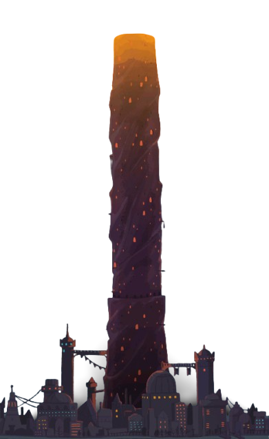
캐릭터 소개
아이언클래드 (The Ironclad)
악마의 힘을 다루는 굳건한 전사입니다. 강력한 물리적 타격과 압도적인 방어도를 자랑하며, 매 전투가 끝날 때마다 악마의 피로 체력을 일부 회복하는 끈질긴 생명력을 지녔습니다.
대표 덱 구성
- 방어 덱 - 압도적인 방어도를 쌓아 강력한 한 방으로 적을 분쇄합니다.
- 취약 덱 - 적의 약점을 극대화하여 순간적인 폭딜을 쏟아냅니다.
- 타격 덱 - '완벽한 타격' 등 타격 카드의 시너지를 활용하여 쉴 새 없이 몰아칩니다.
핵심 카드
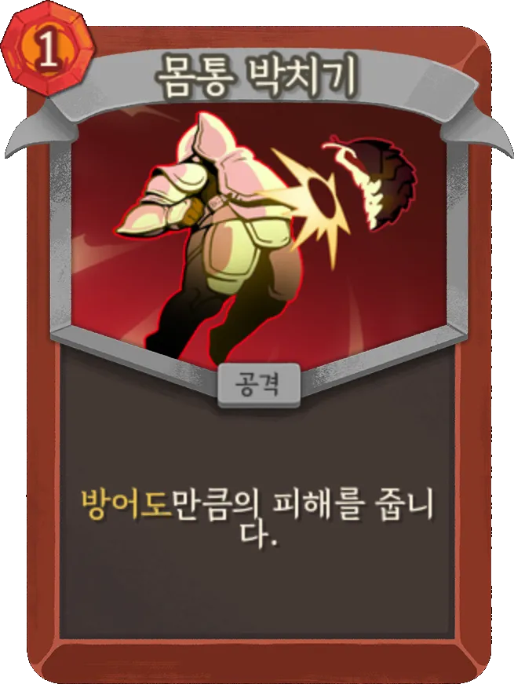
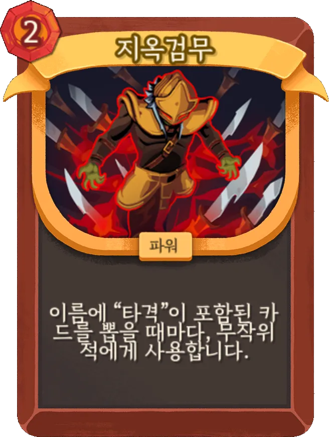
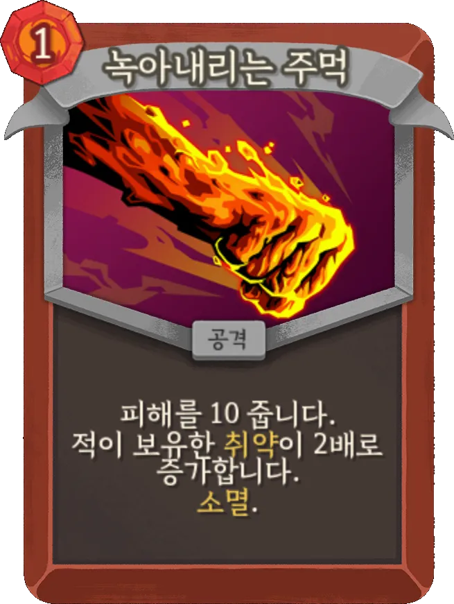
사일런트 (The Silent)
독과 단검을 다루는 안개의 암살자입니다. 가벼운 몸놀림으로 치명적인 연계 공격을 쏟아부으며, 적이 행동하기도 전에 수많은 카드를 쉴 새 없이 뽑아내어 전장을 지배합니다.
대표 덱 구성
- 독 덱 - 맹독을 누적시키고 '촉매'를 통해 치명적인 피해를 입힙니다.
- 단검 덱 - 0코스트 단검을 무수히 생성하여 폭풍 같은 연타를 날립니다.
핵심 카드
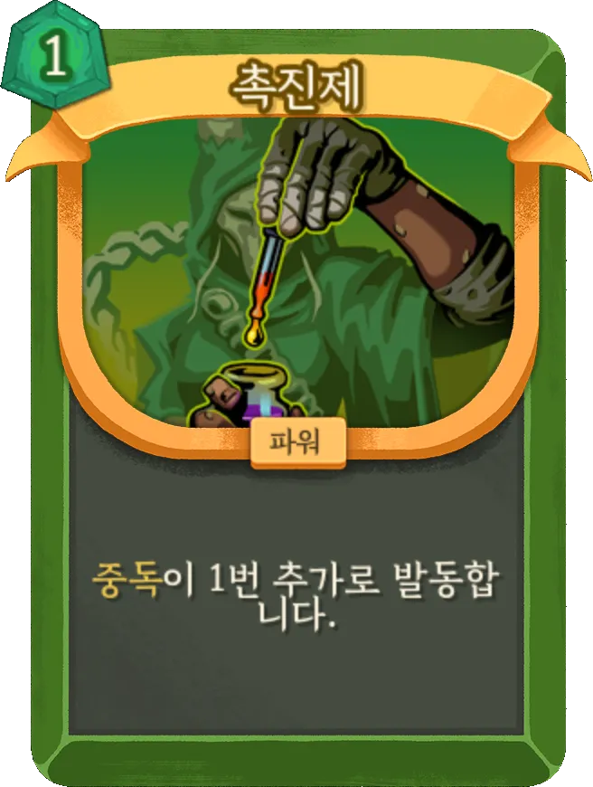
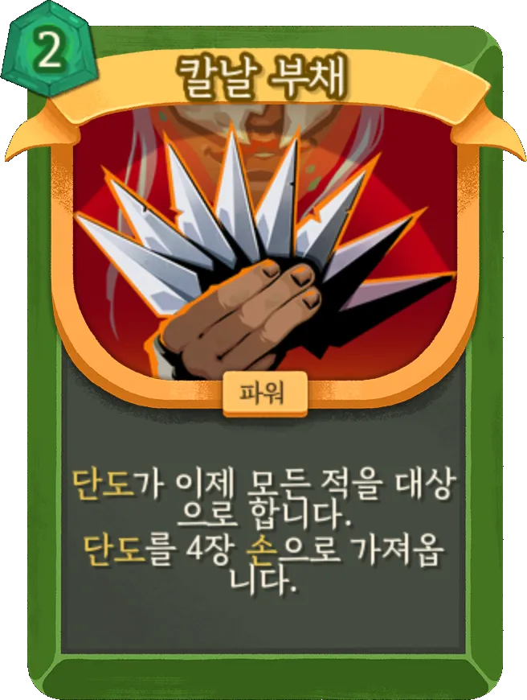
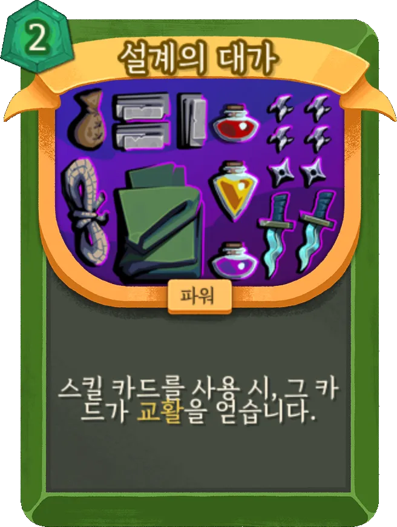
리전트 (The Regent)
권위와 규율을 상징하는 새로운 영웅입니다. 전장의 흐름을 완벽하게 통제하고, 다양한 전술적 이점을 쌓아올려 적을 서서히 압도하는 치밀한 플레이를 선보입니다.
대표 덱 구성
- 별 덱 - 우주의 힘을 끌어모아 강력한 광역 피해와 시너지를 창출합니다.
- 단조 덱 - 전투 중 카드를 강화하고 무기를 제련하여 덱의 잠재력을 끝없이 끌어올립니다.
핵심 카드
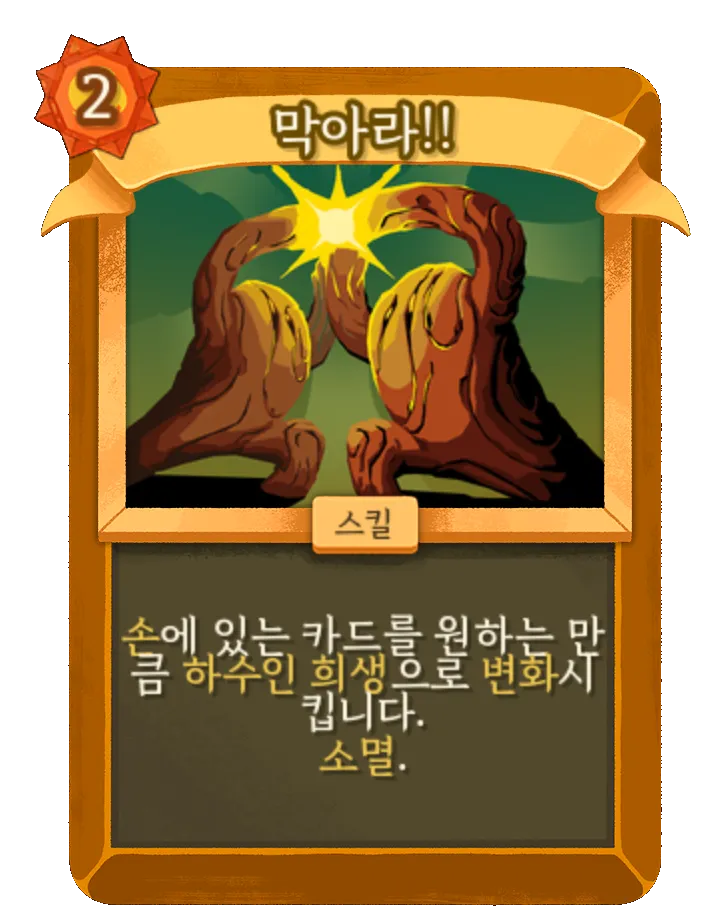
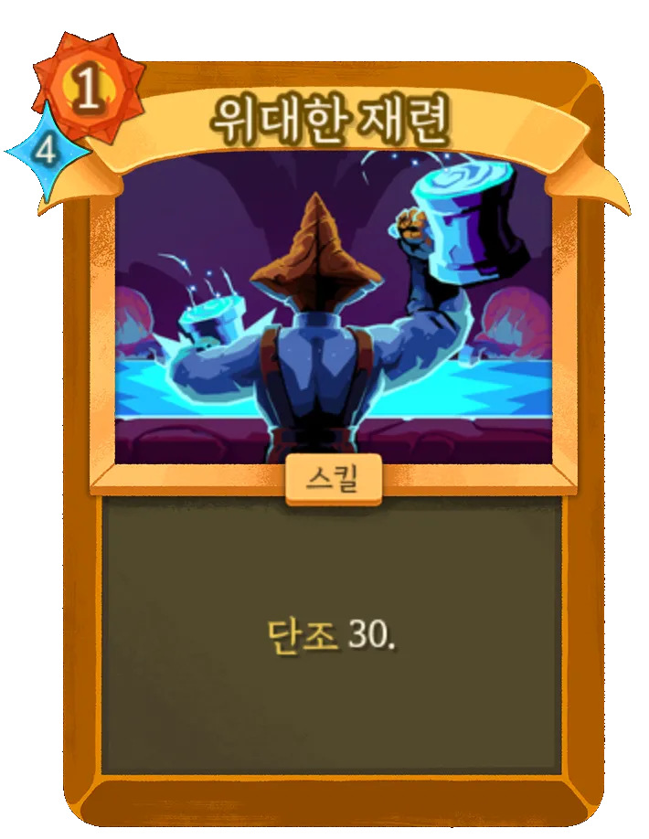
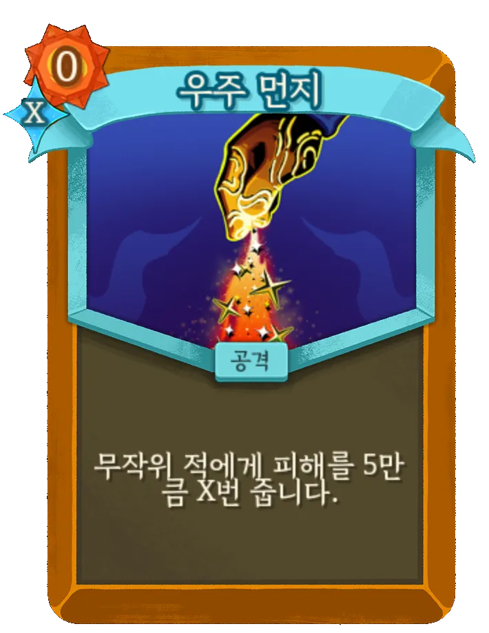
네크로바인더 (The Necrobinder)
죽음과 영혼의 마법을 다루는 미지의 영웅입니다. 금지된 의식과 영혼결속을 통해 생사를 넘나드는 위험하고도 매혹적인 힘을 발휘합니다.
대표 덱 구성
- 소환 덱 - 망령과 언데드를 전장에 불러내어 대신 싸우게 하거나 희생시켜 강력한 마법을 구사합니다.
핵심 카드
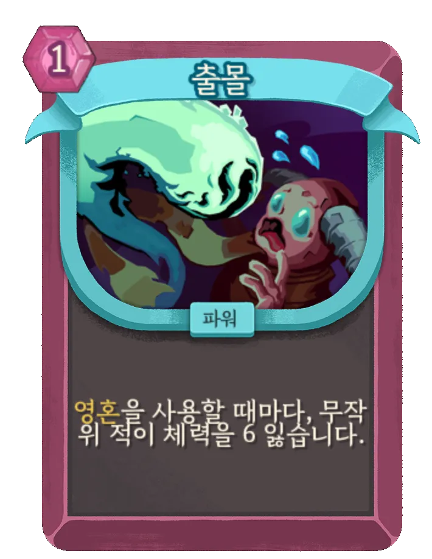
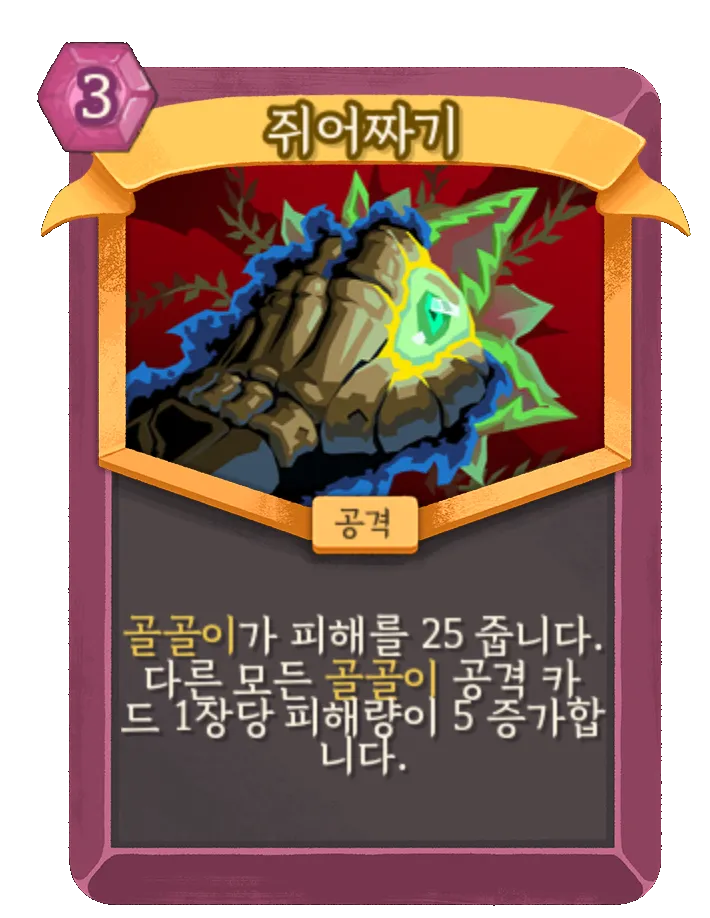
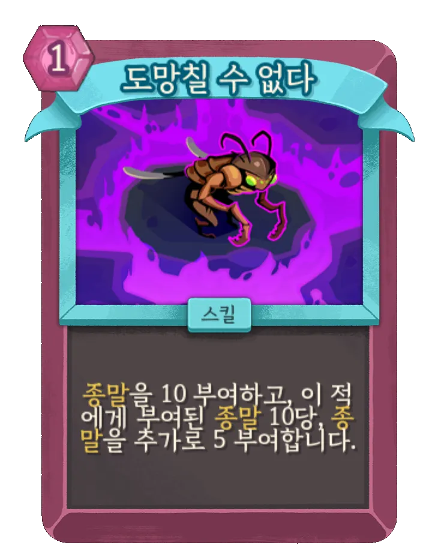
디펙트 (The Defect)
자아를 깨달은 고대의 기계입니다. 번개, 냉기, 암흑 등 다양한 원소 구체를 주위에 소환하여 독창적이고 마법적인 시너지를 만들어냅니다.
대표 덱 구성
- 서브루틴 에너지 복사 덱 - 서브루틴과 재귀 로직을 활용해 폭발적으로 에너지를 복사하고, 강력한 고비용 마법을 쏟아냅니다.
핵심 카드
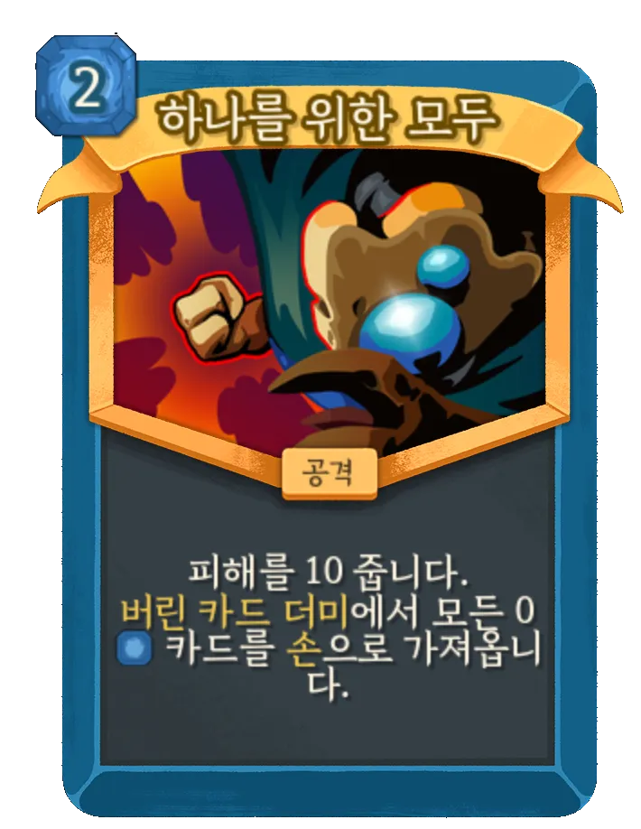
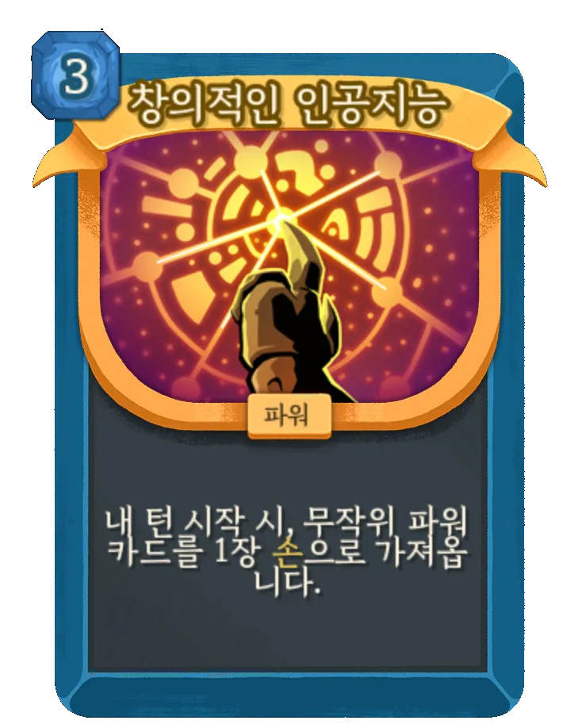
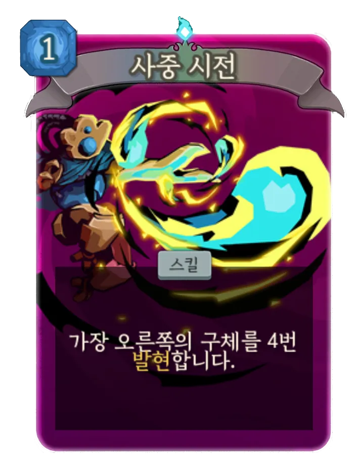